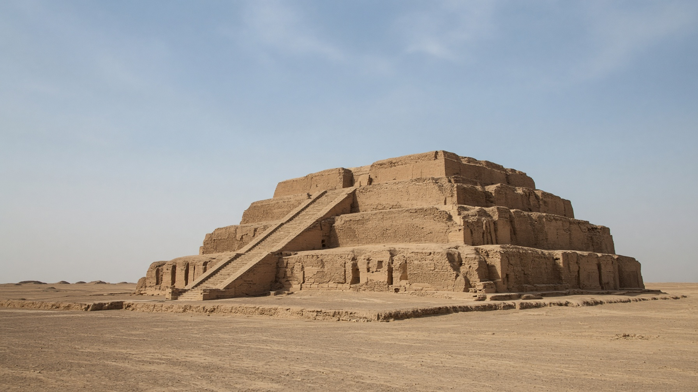

آسيا · المشرق
العراق
Iraq
بين النهرين: سومر وبغداد والأهوار.
- العاصمة
- بغداد
- نظام الحكم
- جمهورية اتحادية
- الاستقلال / الجمهورية
- 3 أكتوبر 1932 — الجمهورية 14 يوليو 1958
- النوع
- جمهورية
منذ التأسيس
استقل العراق عن الانتداب البريطاني في 3 أكتوبر 1932 كملكية هاشمية. أُعلنت الجمهورية في 14 يوليو 1958. الدستور الحالي يجعله جمهورية اتحادية عاصمتها بغداد.
معالم
- معلمزقورة أور
معبد سومري من اللبن في ذي قار.
- طبيعةأهوار الجنوب
مياه ومراكب في قلب الرافدين.
- معمارالمدرسة المستنصرية
واجهة عباسية على دجلة في بغداد.